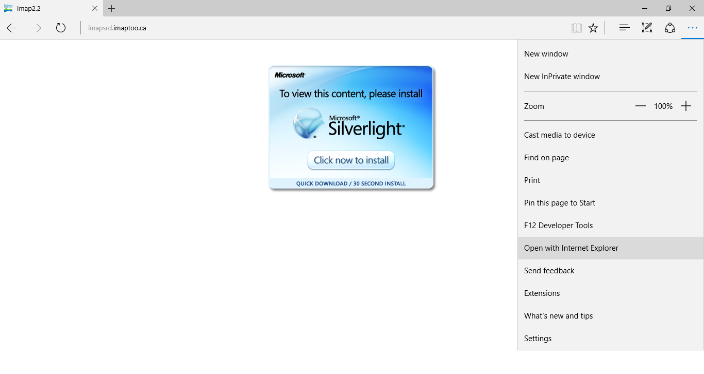

Map It
iMap courtesy of CVRD


Disclaimer: we realize and appreciate that the following application is built upon old, out-dated technology [night, night Silverlight].
Check back here for a tuned up, modern, mobile friendly, fast, user friendly, simplified mapping product.
Using Windows 8 or less???
Click Away on the icon below
Using Windows 10???
Open in Edge > ... @ right of address bar > Open with Internet Explorer

Firefox/Chrome users... install the IE tab then launch the application.
iMap courtesy of CVRD
Runnin' a MAC???